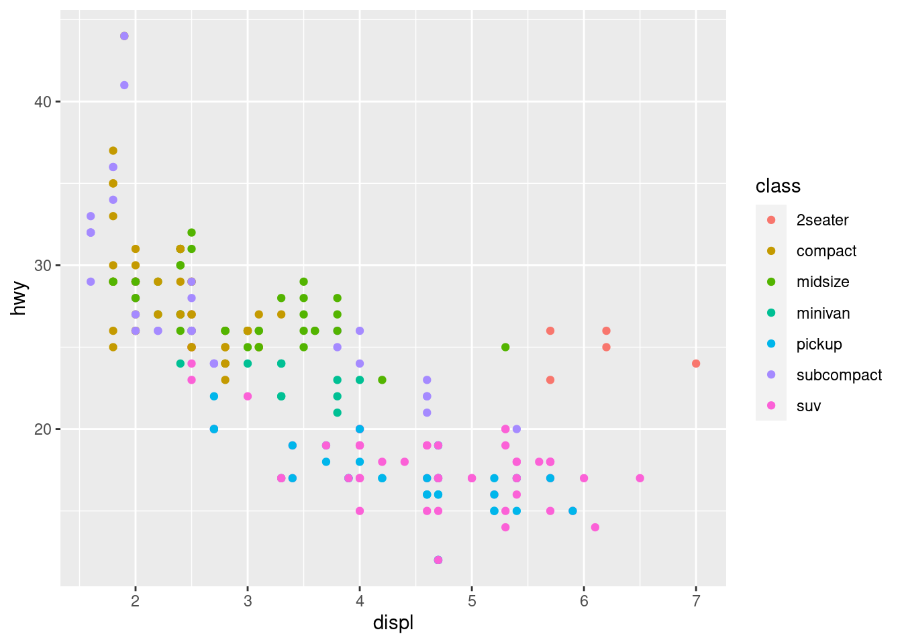

8 Visualización de datos
En este capítulo seguimos trabajando con la hoja de datos mpg que presentamos antes.
Nos planteamos en concreto si los coches con motor más grande (mayor displ) tienen mayor consumo de combustible (menor hyw).
Para responder a la pregunta anterior, vamos a realizar un gráfico de puntos para explorar la relación entre las variables displ (cilindrada) y hyw (millas por galón de combustible):
ggplot(data = mpg) +
geom_point(mapping = aes(x = displ, y = hwy))
Todos los gráficos se inicializan con la función ggplot(). En el código anterior, la línea
ggplot(data = mpg)simplemente indica que en nuestro gráfico usaremos variables de la hoja de datos mpg y crea un gráfico vacío, al que podemos añadir capas utilizando funciones como geom_point(), que añadirá una capa de puntos. A lo largo del curso veremos otras funciones como geom_bar(), geom_hist() y geom_line() que añaden capas con otros objetos geométricos (barras, líneas …).
Cada función para añadir un objeto geométrico como geom_point() necesita un argumento de la forma
mapping <- aes(...)En nuestro ejemplo, ese argumento para la función geom_line() es
mapping <- aes(x = displ, y = hwy)que especifica que, para cada punto en nuestro gráfico, su coordenada \(x\) vendrá definida por el valor de la variable displ, y su coordenada \(y\) se corresponderá con la variable hwy.
En general, en el argumento de la función aes() se especifica una lista de correspondencias (mapping) entre cada estética (aesthetic) o propiedad visual de los objetos geométricos a dibujar y las variables de nuestra hoja de datos.
Ahora vamos a incluir más información en nuestro gráfico estableciendo una correspondencia entre el color de los puntos (otra propiedad estética) y la variable class, que indica el tipo de coche.
ggplot(data = mpg) +
geom_point(mapping = aes(x = displ, y = hwy, color = class))
Notar que la inclusión de la correspondencia color = class ha hecho que ggplot2 asigne un color diferente (nivel diferente de la estética color) a cada tipo de coche (valor diferente de la variable class), e incluya una leyenda explicando qué color corresponde a qué tipo de coche.
Acabamos personalizando los rótulos de nuestro gráfico con labs():
ggplot(data = mpg) +
geom_point(mapping = aes(x = displ, y = hwy, color = class)) +
labs(
title = "Relación entre el tamaño del motor y el consumo de combustible",
x = "Cilindrada (litros)",
y = "Rendimiento combustible (millas/galón)",
color = "Tipo de coche"
)